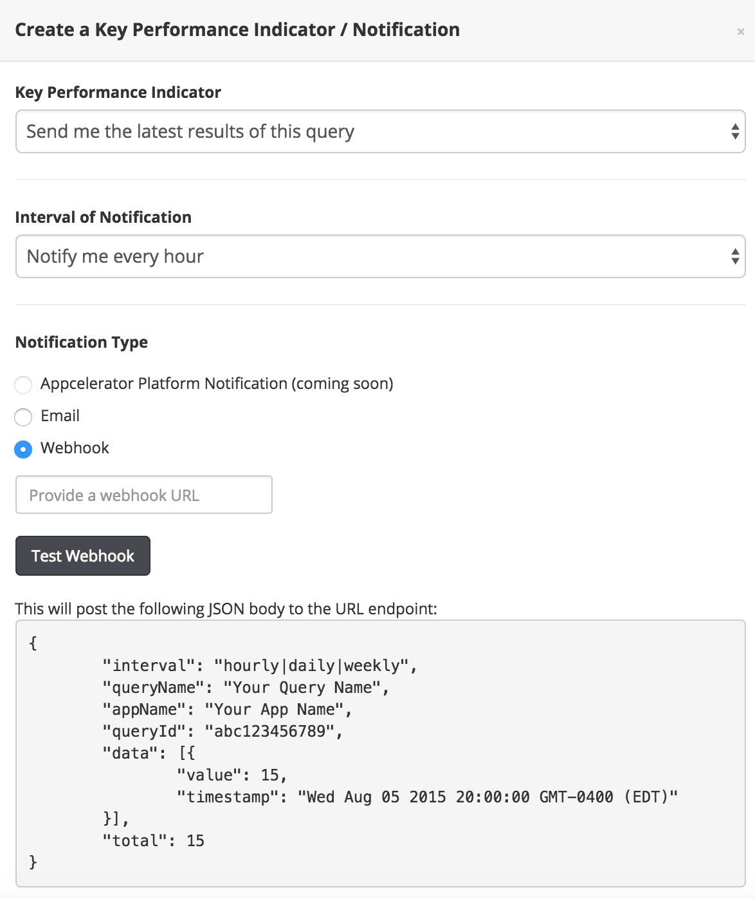

Building Queries
The Query Builder feature is available to Professional and Enterprise organizations in the technology preview mode.
The Query Builder feature assists you in creating queries against the analytics data collected from your mobile application. You can create custom queries based on featureEvents in your Titanium SDK applications using the Query Builder feature. If you have featureEvents enabled in your application, you can create queries like, "Show me how many times, in the last month, users on Android, tapped the login button".
If you do not have featureEvents enabled in your application, but do have analytics turned on, you can still use the Query Builder to create queries based on the default fields that are automatically logged (for example, OS, SDK version, and so forth).
Some of the capabilities of the Query Builder feature are:
-
Default filters for OS platform, device model, OS version, country, and deployment mode.
-
Query for specific features or properties set against specific events in the application.
-
Share the query publicly to all users in the organization.
-
Build funnels based on the feature events configured in the application.
-
Setup alert notifications when a query count is below or above a preset threshold.
-
Compare and visualize multiple queries.
The Query Builder feature is accessible through the Analytics menu on the Dashboard.

To create a query, click the Create a Query button. You should launch the query builder from the application against which you want the queries to run.

The Query Builder screen provides options to select an application and choose the feature events defined for the application. By default, even when feature events are not set up for an application, it is possible to run queries against default filters such as OS platforms, OS versions, and so forth.
This sample chart displays the results of a query that tracks the count of the application usage on the iOS platform for the last 7 days. The Y-Axis displays the number of times (count) a selected event has occurred satisfying the query conditions. If no events are selected, the chart defaults the Y-axis to the number of times an event has occurred and has been tracked for one or more devices.

Notifications can be configured on saved queries. Notifications can be sent through email or the query results can be configured to be sent to a web URL for display on a web page.
